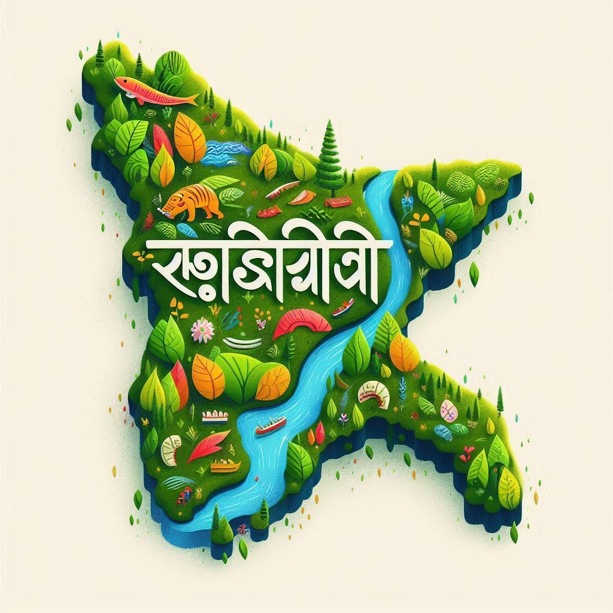
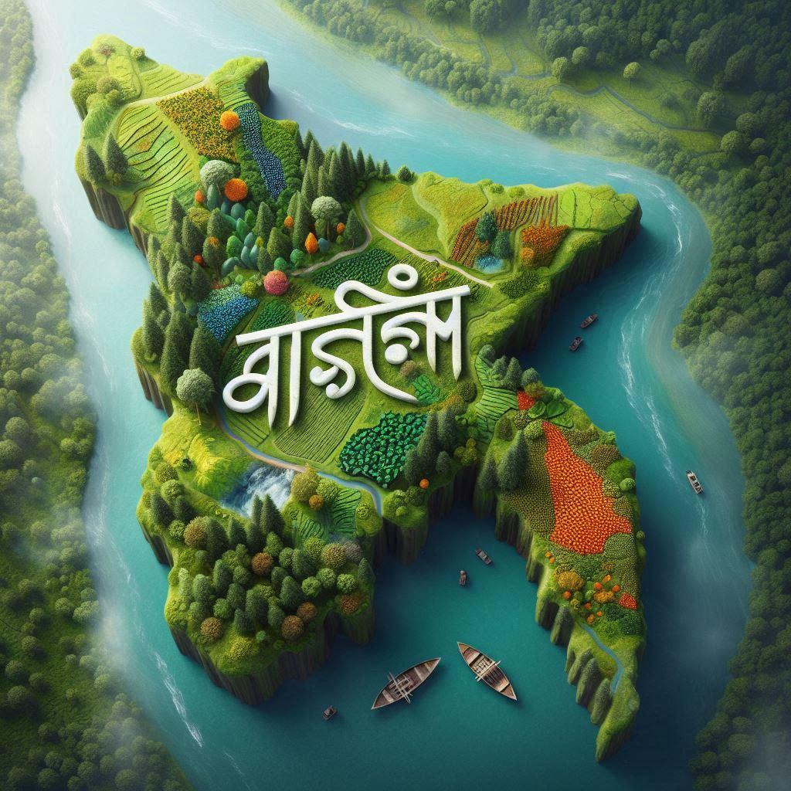

Assam, a culturally diverse state in northeastern India, is home to a rich tapestry of languages reflecting
the region's varied ethnic and tribal communities. The state's linguistic diversity is shaped by its
history, geography, and social fabric. While Assamese is the most widely spoken and official language of
the state, there are several other significant languages used by different ethnic groups and communities.
1.Assamese (Asomiya)
- Assamese is the official language of Assam and is spoken by the majority of its
population. It belongs to the Indo-Aryan branch of the Indo-European language family and has a
rich literary history, with its roots going back to the 7th century.
- The Assamese script is derived from the Brahmi script, which also gave rise to
other Indian scripts like Bengali and Odia. Over time, Assamese literature flourished, producing
notable poets, writers, and scholars.
- The language is not just spoken by ethnic Assamese people but is also used as a lingua franca
among many non-Assamese communities in the state. It serves as a unifying language that connects
various tribal and non-tribal groups.
2.Bengali
- Bengali is the second most spoken language in Assam, particularly in the Barak
Valley region, which includes districts like Cachar, Karimganj, and
Hailakandi.
- The Bengali-speaking population in the Barak Valley has a significant presence and cultural
influence. Bengali is also recognized as an additional official language in the Barak Valley
region.
- The Bengali population of Assam has contributed significantly to the cultural and intellectual
life of the state, including in literature, arts, and education.
3.Bodo
- Bodo is the language of the Bodo people, one of the largest ethnic groups in
Assam, primarily concentrated in the Bodoland Territorial Region in the western part of
the state.
- Bodo belongs to the Tibeto-Burman language family and has been recognized as one of the
22 scheduled languages of India. It is also an official language in Assam's Bodoland
region.
- Bodo has its own script, which is primarily written using the Devanagari script, although
it historically used the Roman script and Bodo script as well.
- The language has a growing body of literature, and there have been efforts to promote its use in
education and government.
4.Karbi
- Karbi is spoken by the Karbi tribe, mainly in the Karbi Anglong and Dima
Hasao districts of Assam. The Karbi people are one of the major ethnic groups in Assam,
and their language belongs to the Sino-Tibetan family.
- Although it does not have official status like Assamese or Bodo, Karbi is widely spoken within
the community and has a rich tradition of oral literature, including folk songs and stories.


5.Mising
- Mising, also known as Miri, is spoken by the Mising people, who primarily
reside in the northern part of Assam near the Brahmaputra River. The Mising community is
part of the larger Tibeto-Burman ethnic group, and their language is closely related to other
Tibeto-Burman languages.
- Mising has a vibrant oral tradition with songs, myths, and folklore being passed down through
generations. Efforts are being made to preserve the language through education and literature.
6. Dimasa:
- Dimasa is spoken by the Dimasa people in the Dima Hasao district (formerly North
Cachar Hills). It is part of the Sino-Tibetan language family and shares linguistic features
with other languages of the region.
-
Like many other indigenous languages of Assam, Dimasa has a rich cultural and oral tradition, and
the community is actively working to preserve the language.
7. Tea Tribes' Languages:
- Assam is home to a large number of people belonging to the Tea Tribes**—communities that were
brought by the British from central India to work in tea plantations. They speak a variety of
languages, including Santhali, Kurmali, Sadri, and Oraon, which belong to different
Indo-Aryan and Munda language families.
- These communities have their own unique cultural practices and dialects, contributing to the
linguistic diversity of Assam.
8. Other Tribal Languages:
Assam is also home to several other smaller ethnic and tribal groups, each with their own distinct
languages. These include:
- Tiwa (spoken by the Tiwa tribe in central Assam)
- Rabha (spoken by the Rabha community in Lower Assam)
- Deori (spoken by the Deori tribe)
- Mech (spoken by the Mech people)
Many of these languages are of Tibeto-Burman origin and are spoken by communities living in the hill
regions or along the Brahmaputra Valley.
9. Hindi and English:
-
Hindi is spoken widely in urban areas and among migrant populations from other parts
of India. It is commonly used for communication between different linguistic groups in Assam.
-
English serves as an important language for administration, education, and business.
It is widely used in government institutions, higher education, and urban centers.